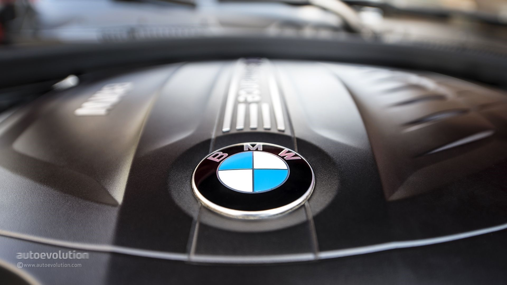

BMW M
BMW M ("M" for "Motorsport") was initially created to facilitate BMW's racing program, which was very successful in the 1960s and 1970s. As time passed, BMW M began to supplement BMW's vehicle portfolio with specially modified higher trim models, for which they are now most known by the general public. These M-badged cars traditionally include modified engines, transmissions, suspensions, interior trims, aerodynamics, and exterior modifications to set them apart from their counterparts. All M models are tested and tuned at BMW's private facility at the Nürburgring racing circuit in Germany.


| Series | Engine | Horsepower |
|---|---|---|
| 3 Series | 4.4 L S65 V8 | 415HP |
| 4 Series | 3.0 L S55 twin-turbo I6 | 425HP |
| 5 Series | 4.4 L S63 twin-turbo V8 | 595HP |
Home